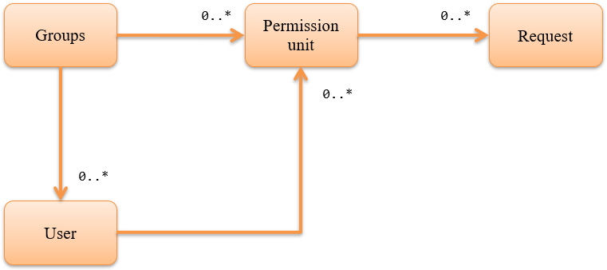

Permission Check by handler¶
Table of contents
This function checks the permission for the functions provided by the application. This function enables access control such as limiting the functions that can be used by each user on the web.
Important
This function should be used only when the application requirements are met.
This function manages the permission data used for permission check using the database and sets the permission for each request (see the conceptual model shown in Permissions can be configured in combination with group and user units). For example, a web registration function is generally composed of multiple requests such as initial display/confirmation/return/registration.
Therefore, while permission can be configured in detail for this function, data design is also required in detail, which may reduce productivity during development and increase operational load after release.
In addition, Permission Check by annotation provides a function to manage permission with a simpler data structure than this function. If it is difficult to use this function, Permission Check by annotation can be an option.
Function overview¶
Permission check can be performed on a request basis¶
Permission check is possible for by configuring Permission Check Handler in the handler queue.
See below for details.
Permissions can be configured in combination with group and user units¶
The conceptual model of permission configuration used for permission check is as follows.
Groups are used for assigning permission to organization units such as departments.
The permission check unit represents the minimum unit of permission check by collecting multiple requests. Requests required to realize the permission check, that is, multiple events on the screen for web, are associated with the permission check unit. For example, the data is as follows for a user registration function.
- Permission check unit
- User registration
- Request associated with permission check unit “user registration”
- Initial display of input screenConfirmation button of input screenRegistration button of confirmation screenReturn button of confirmation screen
By configuring the relationship between the group and user, and the group and permission check unit, permission can be set for each group. Furthermore, since the permission check unit can be set directly to the user, irregular permission to a specific user can be configured.
Module list¶
<dependency>
<groupId>com.nablarch.framework</groupId>
<artifactId>nablarch-common-auth</artifactId>
</dependency>
<dependency>
<groupId>com.nablarch.framework</groupId>
<artifactId>nablarch-common-auth-jdbc</artifactId>
</dependency>
How to use¶
Configure settings to use permission check¶
This function uses a database to manage the permission data used for permission check. The table layout is as follows.
- Groups
Group ID (PK) Values for identifying the group. String type - System account
User ID (PK) Values for identifying the user. String type User ID lock status Lock status of user ID. String type. Effective date (From) Effective date (From) of the user. String type. Effective date (To) Effective date (To) of the user. String type. User ID lock status: “0” if user is not locked, other than “0” if user is locked Effective date (From): In yyyyMMdd format, “19000101” if not specified Effective date (To): In yyyyMMdd format, “99991231” if not specified - Group system account
Group ID(PK) Values for identifying the group. String type User ID(PK) Values for identifying the user. String type Effective date (From)(PK) Effective date (From) of the user. String type Effective date (To) Effective date (To) of the user. String type Effective date (From): In yyyyMMdd format, “19000101” if not specified Effective date (To): In yyyyMMdd format, “99991231” if not specified - Permission check unit
Permission check unit ID (PK) A value for identifying the permission check unit. String type - Permission check unit request
Permission check unit ID (PK) A value for identifying the permission check unit. String type Request ID (PK) Values for identifying the request. String type - Group permission
Group ID (PK) Values for identifying the group. String type Permission check unit ID (PK) A value for identifying the permission check unit. String type - System account permission
User ID (PK) Values for identifying the user. String type Permission check unit ID (PK) A value for identifying the permission check unit. String type
Configure the following settings to use permission check
- Add the configuration of BasicPermissionFactory to the component definition.
- Since BasicPermissionFactory is used by configuring to Permission Check Handler, specify any name as the component name.
<component name="permissionFactory" class="nablarch.common.permission.BasicPermissionFactory">
<!-- Group schema -->
<property name="groupTableSchema">
<component class="nablarch.common.permission.schema.GroupTableSchema">
<!-- Configuration of property is omitted -->
</component>
</property>
<!-- System account schema -->
<property name="systemAccountTableSchema">
<component class="nablarch.common.permission.schema.SystemAccountTableSchema">
<!-- Configuration of property is omitted -->
</component>
</property>
<!-- Group system account schema -->
<property name="groupSystemAccountTableSchema">
<component class="nablarch.common.permission.schema.GroupSystemAccountTableSchema">
<!-- Configuration of property is omitted -->
</component>
</property>
<!-- Permission check unit schema -->
<property name="permissionUnitTableSchema">
<component class="nablarch.common.permission.schema.PermissionUnitTableSchema">
<!-- Configuration of property is omitted -->
</component>
</property>
<!-- Permission check unit request schema -->
<property name="permissionUnitRequestTableSchema">
<component class="nablarch.common.permission.schema.PermissionUnitRequestTableSchema">
<!-- Configuration of property is omitted -->
</component>
</property>
<!-- Group permission schema -->
<property name="groupAuthorityTableSchema">
<component class="nablarch.common.permission.schema.GroupAuthorityTableSchema">
<!-- Configuration of property is omitted -->
</component>
</property>
<!-- System account permission schema -->
<property name="systemAccountAuthorityTableSchema">
<component class="nablarch.common.permission.schema.SystemAccountAuthorityTableSchema">
<!-- Configuration of property is omitted -->
</component>
</property>
<!-- Transaction manager used for database access -->
<property name="dbManager" ref="permissionCheckDbManager"/>
<!-- Provider giving the business date used to determine the effective date (FROM/TO) -->
<property name="businessDateProvider" ref="businessDateProvider" />
</component>
Add the following component definition as BasicPermissionFactory requires initialization.
<component name="initializer"
class="nablarch.core.repository.initialization.BasicApplicationInitializer">
<property name="initializeList">
<list>
<!-- Initialize BasicPermissionFactory -->
<component-ref name="permissionFactory" />
</list>
</property>
</component>
Perform permission check on the server¶
Use Permission for the permission check. Since Permission is configured to the thread context by Permission Check Handler, acquire by using PermissionUtil.getPermission.
Permission permission = PermissionUtil.getPermission();
if (permission.permit("/action/user/unlock")) {
// The process comes here when the permission check is OK
}
Control screen display according to the permission¶
Use a custom tag to control the non-display (inactivity) of buttons and links according to permission availability. See Switching between display/no display of the button/link depending on permission check/service availability.
Access permission data¶
Depending on the application requirements, access to permission data may be required, such as acquiring the list of users belonging to a specific group. However, this function checks only for the permission.
Therefore, to access the permission data, use Universal DAO to provide support by creating SQL.
Expansion example¶
None.